25% Increase in Navigation & Content Creation Efficiency.
“…having a preview of the template & seeing just with one click it’s easier for me.”
User from Spain.
Untangling the Email Marketing Workflow @ Ingram Micro and boosting work efficiency by 25% for 279+ marketing associates globally.
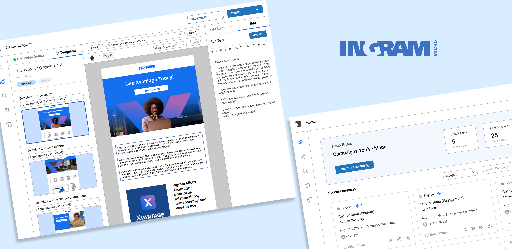
I worked on “Template-Repository” (TR for short) – Ingram Micro’s in-house marketing campaign creation tool used by 279+ marketing associates globally. This tool allows associates to create company-branded marketing campaigns and have them sent to the inbox of subscribers.
My work centered on accelerating campaign creation to increase the volume of hand-off-ready campaigns for our subscribers.
Before diving in, I’ll start by sharing some business context and clarifying key terms to help frame the design process.
Campaigns are collections of marketing messages (email marketing templates) designed to achieve specific business goals. They are organized into different categories, each focused on a distinct objective such as engagement, growth, or reactivation.
Within each campaign category, campaigns use a fixed set of templates catered for a different purpose (examples: onboarding, product highlights), but users can also create custom campaigns with full flexibility.
Think of a campaign like a folder: category-based campaigns come with a predefined set of files (templates), while custom campaigns let you add as many as needed.
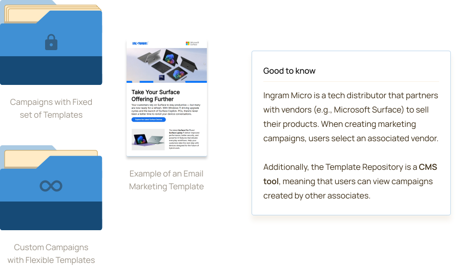
Before gathering requirements and setting project goals, I observed 6+ marketing associates and gathered their intel on how the current Template Repository works.
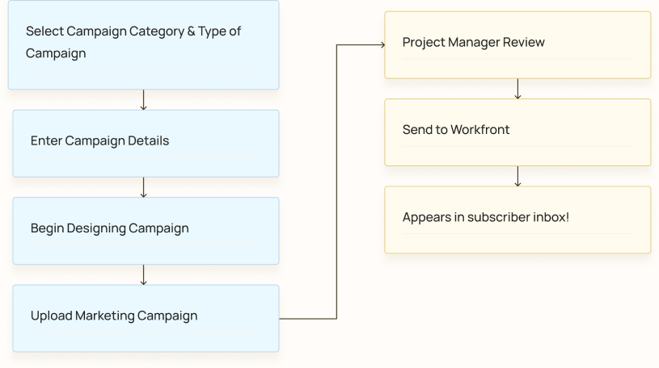
Optimizing the flow for marketing associates should be the priority since it plays a vital role in the creation of marketing campaigns.
Project Manager flow is secondary and can be worked on once configuring the flow for marketing associates is fulfilled.
Ingram Micro associates need to deliver hand-off ready marketing campaigns, but technical constraints and workflow ambiguity hinders their productivity.
This reduces the number of polished campaigns to PMs and creates an inconvenient campaign design experience.
A campaign building experience that is flexible and contains less ambiguous roadblocks.
Needs more ready-to-be handed off email marketing campaigns.
Through 6+ user interviews with marketing associates. I discovered 3 common patterns that users mentioned when it came to their experience with Template Repository.
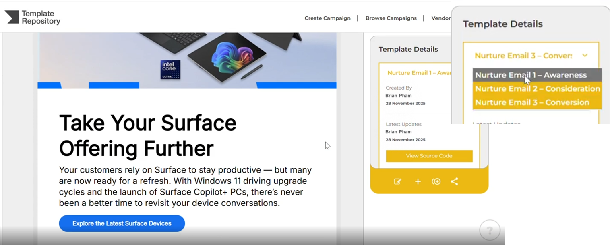
Marketing Associates can only view & select to edit 1 template of a campaign at a time.
They must also upload unfinished work to save their progress.
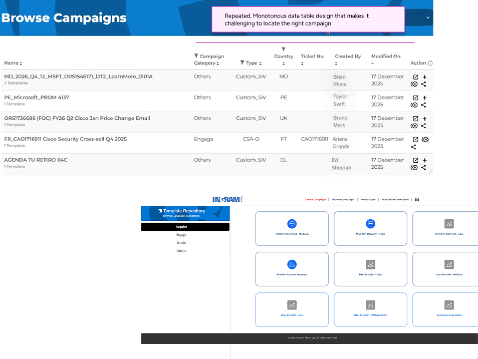
Monotonous Design makes it difficult for users to locate their desired campaign.
Repetitive icons also make it hard to locate the desired campaign.
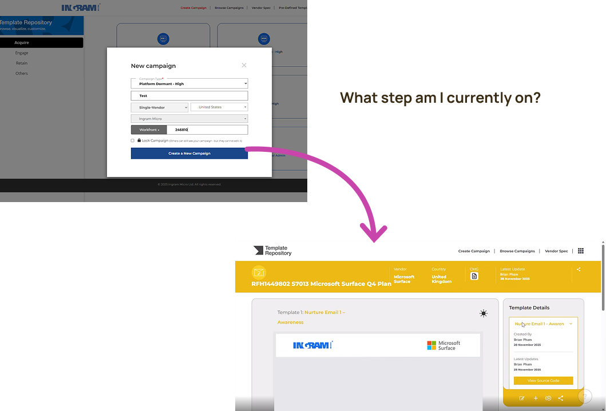
Disjointed transitions make it difficult for users to identify their current stage of work.
E.g. in-put pop-up to full-screen design interface.
With this…
How might we optimize the email marketing campaign creation experience that provides marketing associates with clarity & efficiency needed to deliver hand-off ready campaigns?
After uncovering key pain points in Template Repository, I identified 4 key goals that align with user needs and business objectives.
To improve workflow clarity & enhancing user recall throughout the marketing campaign design lifecycle.
Enhance workflow flexibility to make users feel less constrained while creating email marketing campaigns.
To create/edit marketing campaigns while maintaining a digestible interface.
Increase the amount of hand-off ready marketing campaigns for PMs to approve.
As mentioned earlier, marketing associates are the primary user and program managers are the secondary user of Template Repository. Despite using the same product, they use it for different purposes.
Currently 279+ globally, they are non-designers, meaning that need a tool that allows them to easily create company-branded marketing campaigns.
Responsible for reviewing marketing campaigns. Once approved, PMs send them to Workfront. They need a process that allows them to search for completed campaigns faster.
During interviews, I asked marketing associates at Ingram Micro what tools that were used in the past to create marketing campaigns. I researched these tools and analyzed the pros and cons of each product.
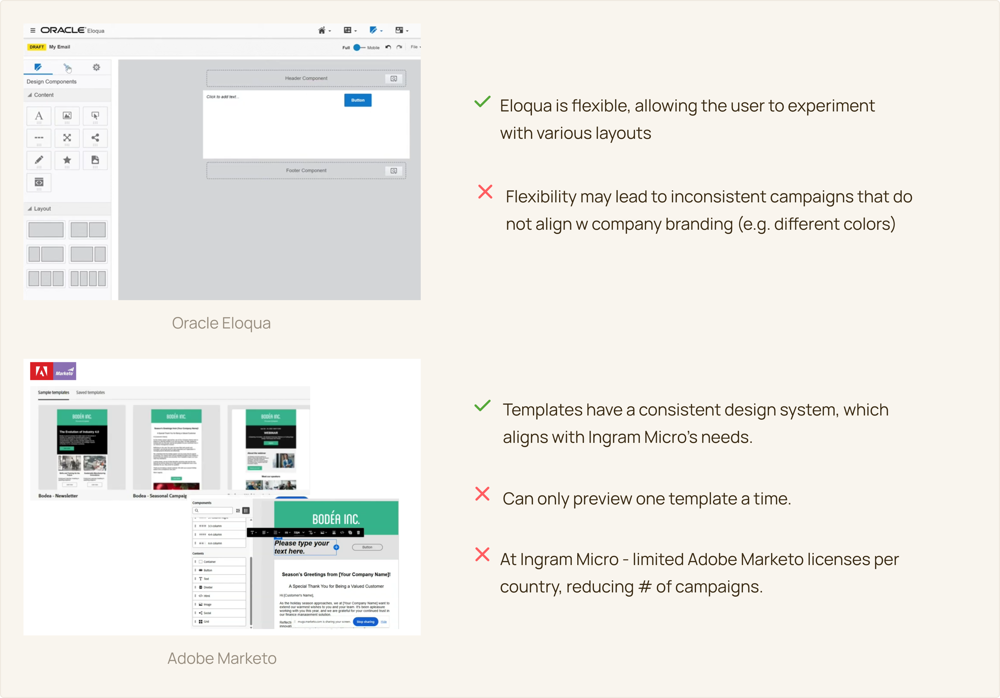
After conducting a competitive analysis, I gathered a list of potential features to explore based on the goals that I defined earlier. I focused on features that could speed up the process of creating campaigns, while reducing task ambiguity.
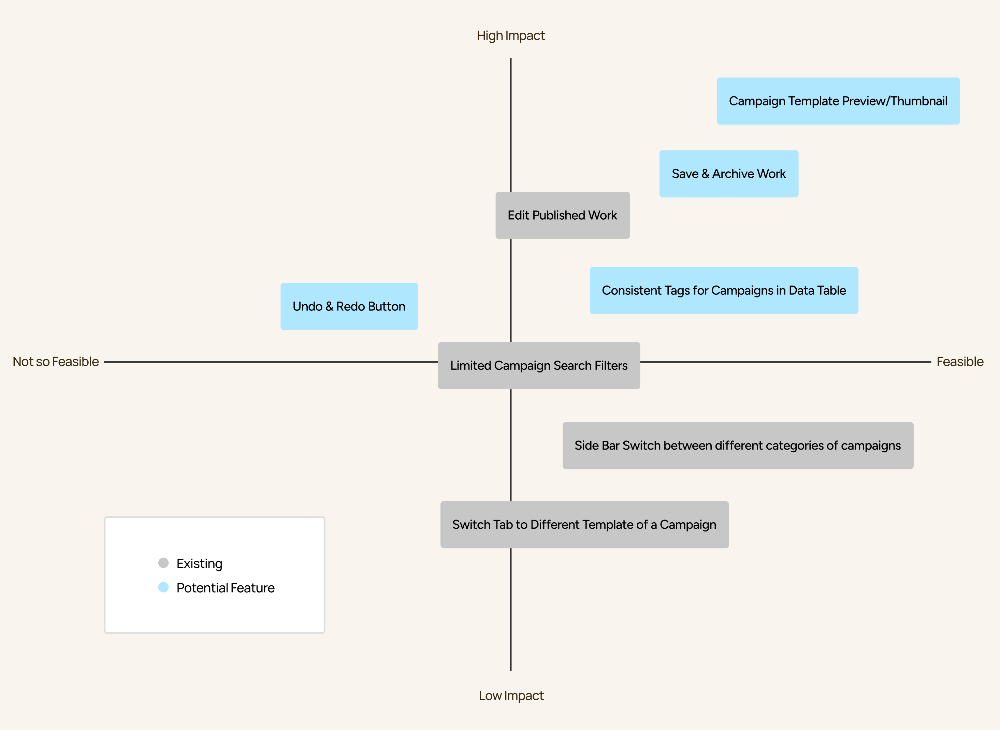
The two primary flows in this product are creating a new campaign, & searching for an existing campaign. I mapped out a flow to guide the designing phase, containing the possible features to explore.
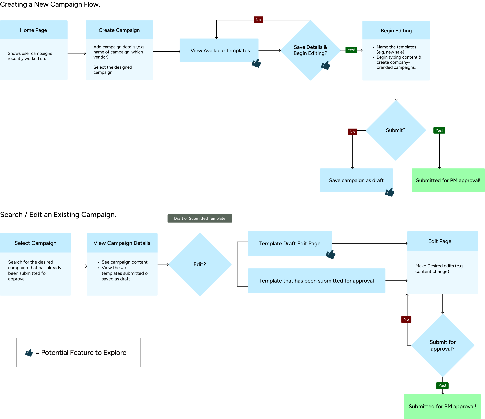
To reduce ambiguity, it was important for marketing associates to know what email marketing templates they were working with before starting the design process.
The goal of this section was the measure how long it took for users to locate their desired campaign and if template support mechanisms (e.g. previews) minimize ambiguity in the campaign design process.
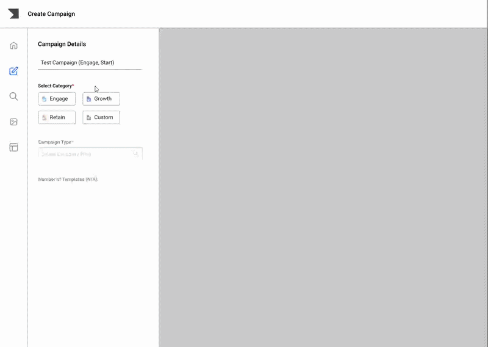
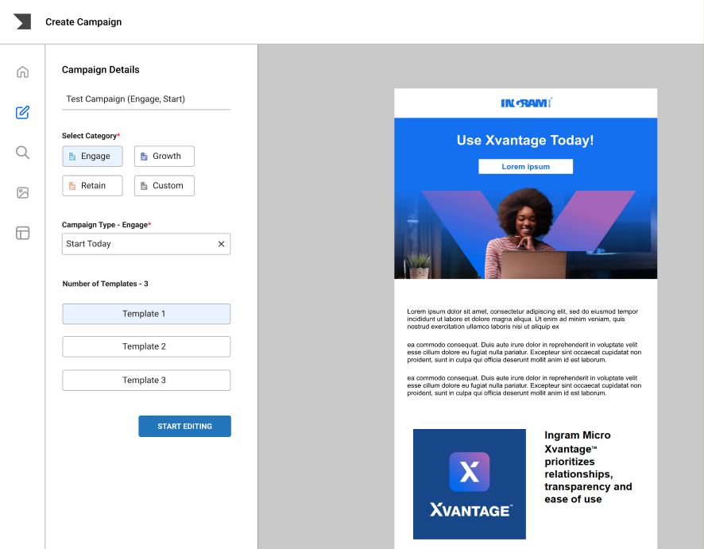

Next, I provided users a series of steps to follow to create their own campaign, such as adding a hero banner.
The goal of this section was to measure how comfortable marketing associates were with designing without use a campaign with predefined templates.
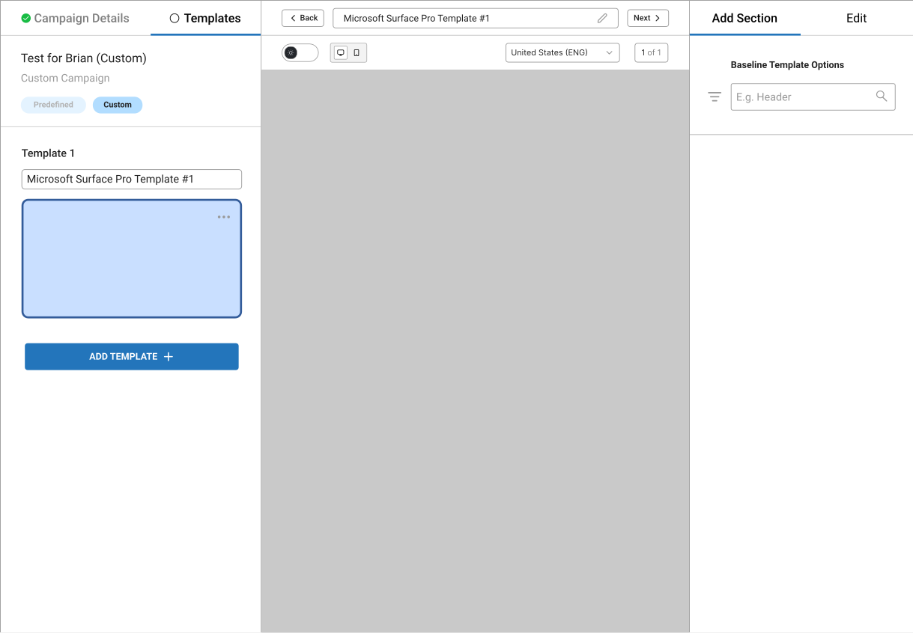

Since users must submit their work for approval to save their progress, it appears in the “Browse Campaigns” section for everyone to see. This makes it difficult, especially for PMs to differentiate between completed campaigns and those saved as a draft.
The goal of this section was to reduce efforts of browsing campaigns and come up with a design that helps distinguish between completed campaigns & those saved as a draft.
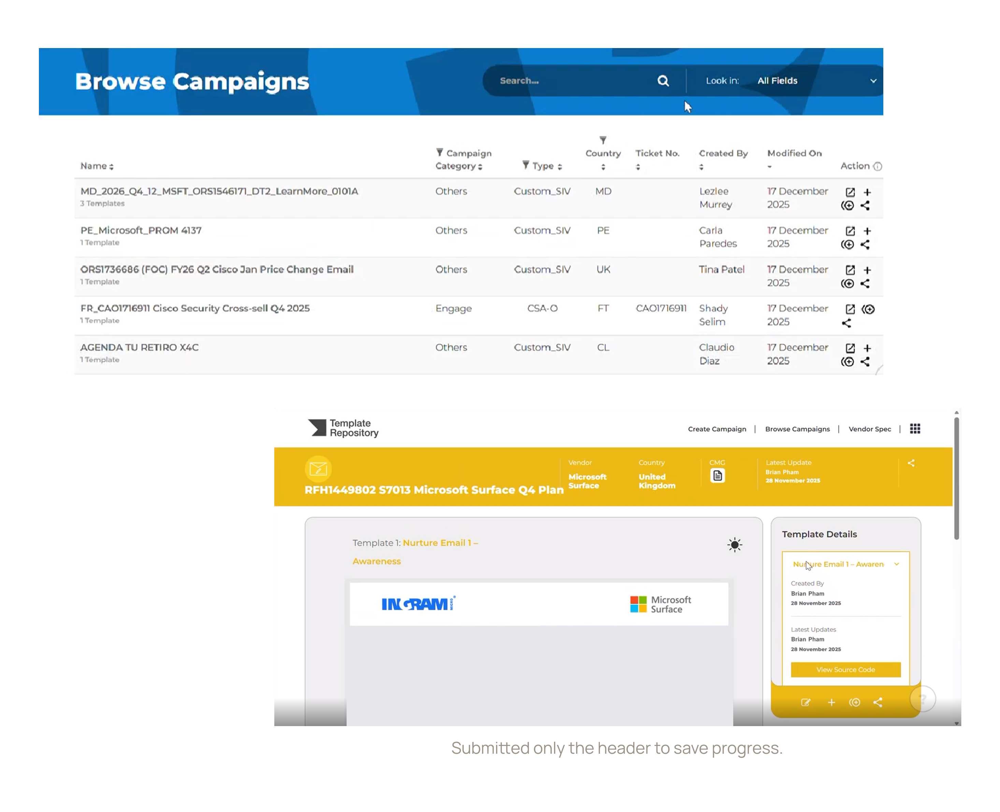

Goal 1
Marketing Associates input key campaign details (e.g., campaign name, vendor choice) upfront and preview predefined templates before designing. As they design, they see real-time updates to their template.
Goal 2.
Marketing Associates are not limited to predefined templates and can rearrange sections and customize layouts that align with company branding.
Goal 3
By incorporating an updated design system in the dashboard, users can search and effectively scan to look for their desired campaign. To help preserve energy, users can save their campaigns as a draft and edit them when needed.
Goal 4
Since the templates of a campaign are organized by submitted and draft, PMs are aware of the campaigns that are ready for hand-off. They are able to do so by generating a shareable URL, which only shares submitted templates.
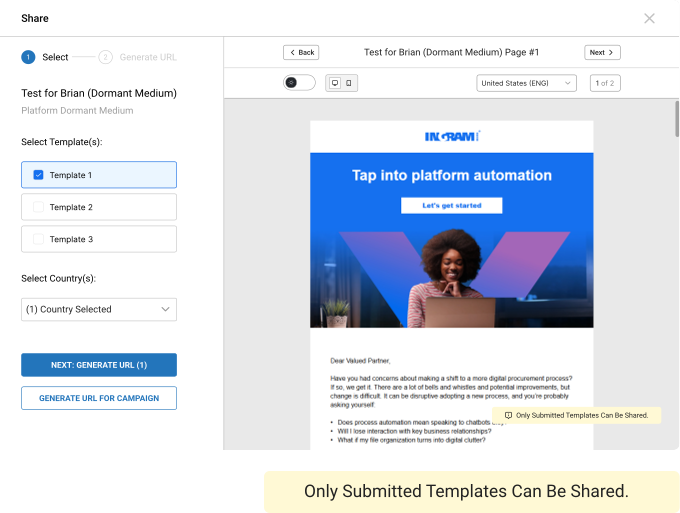
By defining the goals early on in the design process, it helped identify success metrics more efficiently. As a result, I came across 3 success metrics (2 user success metrics and 1 business success metric).
“…having a preview of the template & seeing just with one click it’s easier for me.”
User from Spain.
“…so I am able to switch between templates on the left hand side because it is bigger & visible and is actually dragging my attention there.”
User from India.
“…it is easier to differentiate between campaigns that are still in draft mode vs. submitted. This makes it easier to send-off.”
PM from the US.
Despite the time constraint given, I was satisfied by the design decisions I came up with for the marketing associates responsible for designing marketing campaigns. If given more time, I would include additional solutions on top of an updated design system to assist PMs with locating their desired campaigns. Additionally, I came across 3 learning experiences:
Thank you for reading!